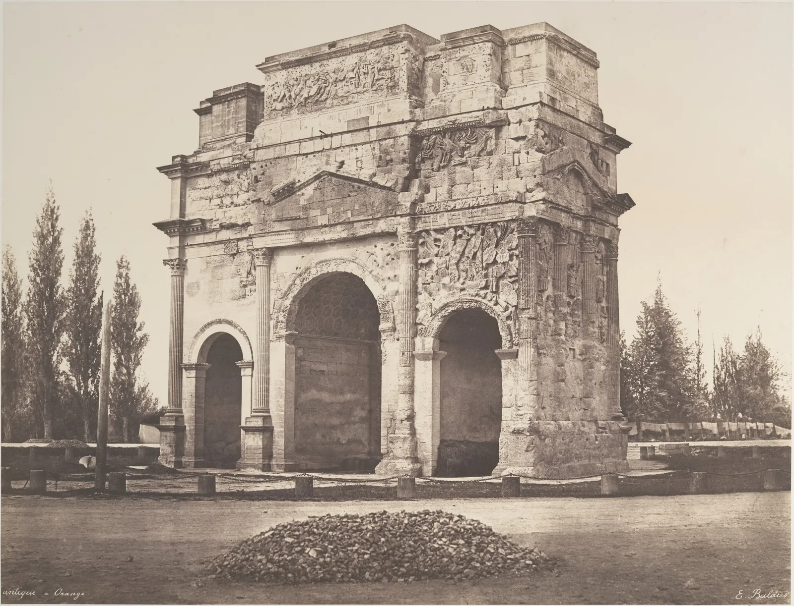

망원 렌즈는 배경을 당겨 붙이고, 광각 렌즈는 코를 크게 만든다는 말을 흔히 듣는다. 휴대폰으로 셀카를 찍으면 얼굴이 어딘가 낯설고, 친구가 몇 걸음 떨어져 찍어 준 사진의 얼굴이 더 "나 같다". 높은 건물을 올려 찍으면 건물이 뒤로 넘어갈 듯 기운다. 이 장은 이 세 현상이 렌즈의 성질이 아니라 카메라가 선 자리의 결과라는 것을 보인다. 그리고 그 자리를 고르는 법, 이미 기운 선을 바로 세우는 법을 다룬다.
같은 자리에서 렌즈를 바꾸는 것은 자르기와 같고 원근을 바꾸지 않는다는 것을 확인한다.
가까운 것과 먼 것의 크기 비가 촬영 거리로 정해진다는 것을 식으로 설명하고, "망원 압축"의 실제를 안다.
얼굴 사진에서 코와 귀의 상대 크기가 거리에 따라 어떻게 바뀌는지 계산하고, 인물 사진의 거리를 고른다.
규칙을 일부러 깨는 원근(올려 본 시점, 동아시아 그림의 여러 시점)을 의도에 따라 고른다.
망원은 배경을 당기는가
같은 사람을 두 번 찍는다고 하자. 한 번은 광각 렌즈로 가까이 다가가서, 한 번은 망원 렌즈로 멀리 물러서서. 두 사진에서 사람의 크기를 같게 맞추면 배경이 확연히 다르다. 광각 사진에서는 뒤의 서가가 작고 멀리 물러나 있고, 통로가 길게 뻗는다. 망원 사진에서는 서가가 사람 바로 뒤에 붙어 있는 듯 크고, 통로 끝의 창이 어깨 옆까지 다가와 있다. 사람들은 이것을 "망원 압축"이라고 부른다.
그림 1. 거리가 크기 비를 정한다. 사람에게서 1 m 떨어진 A에게 창은 사람보다 네 배 멀다. 4 m 떨어진 B에게 창은 사람보다 1.75배 멀 뿐이다. 그래서 사람을 같은 크기로 찍으면 B의 사진에서 창이 두 배 넘게 크다. 렌즈는 사람을 화면에서 같은 크기로 맞추는 일만 한다(A는 광각, B는 망원).
그림 1이 이 장의 결론을 미리 보여 준다. 배경이 크게 보이는 것은 B가 망원을 썼기 때문이 아니라 멀리 섰기 때문이다. B가 같은 자리에서 광각으로 찍었다면 사람은 작게, 창은 그만큼 작게 찍힌다. 그 사진의 가운데를 잘라 키우면 망원 사진과 똑같아진다. 5장에서 본 대로, 같은 자리에서는 렌즈를 바꾸는 것도 자르는 것도 담는 범위를 바꿀 뿐이다.
같은 자리에서는 줌이 곧 자르기다
직접 확인한다. 아래 두 그림은 책방 E의 통로 입구 앞에 선 같은 카메라의 사진이다. 왼쪽(경계선 왼편)은 18 mm로 찍은 사진의 가운데를 잘라 키운 것, 오른쪽은 줌을 당겨 처음부터 그 화각으로 찍은 것이다. 경계선을 끌어 비교하고, 슬라이더로 줌의 초점거리를 바꾼다.
SIMULATOR
같은 자리, 다른 초점거리
18 mm에서 잘라 낸 비율(가로)—
남는 화소—
주인과 창의 크기 비—
해볼 것: ① 40 mm에서 경계선을 끈다. 주인, 서가, 창의 위치와 크기가 양쪽에서 한 화소도 어긋나지 않는다. ② "윤곽선 겹쳐 보기"를 켠다. 줌 사진의 윤곽선이 잘라 키운 사진 위에 정확히 포개진다. ③ 55 mm까지 올린다. 잘라 키운 쪽은 화소가 9분의 1 남짓만 남아 흐려지지만 원근은 그대로다. "주인과 창의 크기 비"는 초점거리를 바꿔도 변하지 않는다. (카메라는 통로 입구 밖 0.6 m, 높이 1.55 m, 주인은 통로 안 1 m에 선 이 책의 모형 장면이다. 카메라에서 주인까지 1.6 m. 잘라 키운 쪽의 흐림은 화소가 줄어드는 것을 흉내 낸 것이다.)
렌즈는 장면을 상으로 옮기는 장치일 뿐, 장면 속 물체들 사이의 크기 비와 겹침을 정하지 않는다. 그것을 정하는 것은 빛줄기가 모이는 한 점, 곧 카메라의 위치다. 이 점을 시점(Point of view, center of projection)이라고 한다. 원근을 바꾸고 싶으면 시점을 옮겨야 하고, 그것은 발로만 할 수 있다. 사진에서 원근(Perspective)이라는 말은 이 시점이 만드는 크기와 모양의 관계를 가리킨다.
원근은 거리가 정한다
카메라에서 \(D\)만큼 떨어진 물체와, 그보다 \(\Delta\)만큼 더 뒤에 있는 같은 크기의 물체가 있다. 상의 크기는 거리에 반비례하므로(5장의 \(h = fH/D\)) 앞의 것이 뒤의 것보다 몇 배 크게 찍히는지는 초점거리와 상관없이 정해진다.
\(D\): 카메라에서 앞 물체까지의 거리, \(\Delta\): 앞 물체와 뒤 물체 사이의 거리. 초점거리 \(f\)는 식에 없다. 카메라에서 멀어질수록(\(D\)가 클수록) 비가 1에 가까워져 앞과 뒤가 비슷한 크기로 찍힌다.
이 식이 "망원 압축"의 전부다. 사람을 같은 크기로 찍으려면 멀리 설수록 긴 초점거리가 필요하니, 망원으로 찍은 사진에는 언제나 \(D\)가 큰 원근, 곧 앞뒤가 비슷한 크기로 붙어 보이는 원근이 담긴다. 렌즈 때문에 압축된 것이 아니라 멀리서 본 장면이 원래 그렇게 생겼다. 아래에서 주인의 크기를 화면에 고정해 두고 카메라를 앞뒤로 움직인다. 초점거리는 주인의 크기가 같게 유지되도록 저절로 바뀐다.
SIMULATOR
주인은 그대로, 카메라만 물러서기
위쪽 띠의 카메라를 끈다
필요한 초점거리(APS-C · 환산)—
주인 대 창의 거리 비—
창의 폭(화면 폭 대비)—
해볼 것: ① 0.6 m에서 시작한다. 주인 뒤의 통로가 길게 뻗고 끝의 창은 작다. 이 자리에서 머리부터 가슴까지 담으려면 APS-C에서 약 19 mm가 필요하다. ② 슬라이더를 3 m 넘게 민다. 주인의 크기는 그대로인데 창이 몇 배로 커지고 통로가 짧아 보인다. 필요한 초점거리는 80 mm를 넘는다. ③ 0.35 m까지 당긴다. 필요한 초점거리가 10 mm 남짓으로 짧아지고, 이 미러리스의 줌(18 mm)으로는 더 이상 그 화면을 만들 수 없다. (카메라 높이 1.55 m, 화면 세로에 주인의 머리 위 10 cm부터 가슴까지 약 0.75 m를 담는 모형이다. 통로는 이 책의 모형 서점이다.)
창이 커지는 정도는 식 그대로다. 주인에서 창까지가 4.4 m일 때 0.6 m에서 보면 창은 주인보다 \((0.6 + 4.4)/0.6 \approx 8.3\)배 멀고, 3 m에서 보면 \(7.4/3 \approx 2.5\)배 멀 뿐이다. 같은 창이 주인에 비해 세 배 넘게 크게 찍힌다. 영화에서 카메라를 뒤로 빼며 동시에 줌을 당겨 인물은 그대로 두고 배경만 밀려오게 하는 기법(돌리 줌)이 바로 이 시뮬레이터의 움직임이다.
원근은 사진을 보는 거리와도 짝을 이룬다
사진 속 원근이 "자연스럽게" 보이려면 사진을 보는 사람의 눈이 원래 카메라가 있던 자리에 해당하는 거리에 있어야 한다는 설명이 있다. 풀프레임 환산 초점거리 \(f\)로 찍은 사진을 대각선 43 mm의 \(k\)배로 인쇄했다면, \(f\times k\) 거리에서 보면 원래의 시선 각도와 같아진다. 예를 들어 환산 27 mm로 찍은 사진을 가로 30 cm 남짓(대각선 약 36 cm, 약 8.3배)으로 뽑으면 약 22 cm 앞에서 볼 때 원래 각도와 맞는다. 보통은 그보다 멀리서 보기 때문에 광각 사진의 가장자리가 늘어나 보이고 깊이가 과장되어 보인다. 반대로 망원 사진은 너무 가까이서 보는 셈이라 납작해 보인다. 이 설명은 투시도법의 오랜 원리에서 나온 것이고, 실제로 사람이 사진을 볼 때 얼마나 이 기하를 따르는지는 지각 연구에서 여전히 다뤄지는 문제다.
가까이서 찍은 얼굴
얼굴은 납작하지 않다. 코끝에서 귀까지는 깊이가 대략 10 cm쯤 된다(사람마다 다르다. 이 책은 10 cm로 단순화한다). 앞의 식에 넣으면, 카메라에서 코끝까지 30 cm일 때 코는 귀보다 \((30+10)/30 \approx 1.33\)배, 즉 33% 크게 찍힌다. 1.5 m에서는 \(160/150 \approx 1.07\), 7%다. 팔을 뻗어 찍는 셀카(코끝까지 40~60 cm 안팎)에서 코가 커 보이고 얼굴이 좁고 길어 보이며 귀가 뺨 뒤로 숨는 것은 이 때문이다. 렌즈 탓이 아니라 거리 탓이다.
SIMULATOR
거리에 따라 바뀌는 얼굴
얼굴을 좌우로 끌어 돌린다
코끝 대 귀의 크기 비—
이 화면에 필요한 초점거리(APS-C 세로)—
얼굴 폭 ÷ 높이—
해볼 것: ① 0.4 m(팔을 뻗은 셀카 거리)에서 얼굴을 본다. 코가 커지고 귀는 뺨 뒤로 거의 숨는다. 점선은 4 m에서 본 같은 얼굴이다. ② 슬라이더를 1.5 m, 2 m로 옮긴다. 코의 배율이 1.07, 1.05로 내려가고 귀가 다시 드러난다. 그 너머로는 거의 달라지지 않는다. ③ 0.2 m까지 당기고 얼굴을 옆으로 끌어 돌린다. 이마와 턱이 뒤로 쏠리고 얼굴이 공처럼 부푼다. (머리는 타원체와 몇 개의 점으로 만든 장난감 모형이다. 코끝에서 귀까지 깊이 10 cm, 얼굴 높이를 화면의 70%로 유지하도록 초점거리를 바꾼다.)
그래서 인물 사진가들은 오래전부터 얼굴을 담을 때 1.5 m 이상 떨어지는 것을 출발점으로 삼는다. 그 거리에서 머리와 어깨를 화면에 채우려면 풀프레임 환산 70~100 mm 안팎의 렌즈가 필요해지고, 그래서 이 범위가 흔히 "인물 렌즈"로 불린다. 순서가 중요하다. 렌즈가 얼굴을 예쁘게 만드는 것이 아니라, 알맞은 거리를 고르면 그 거리에 맞는 렌즈가 따라오는 것이다.
휴대폰 두 장으로 원근 비교하기
친구에게 부탁해 같은 자리에 서 달라고 한다. 첫 장은 휴대폰 1×로 얼굴이 화면을 채울 만큼 다가가서(코끝까지 40~50 cm) 찍는다. 둘째 장은 2 m 떨어져 같은 1×로 찍고, 나중에 얼굴 부분만 잘라 첫 장과 같은 크기로 키운다. 두 장을 나란히 놓고 코의 폭과 두 눈 사이의 비, 귀가 보이는 정도, 뒤 배경의 크기를 비교한다. 종이에 두 얼굴의 윤곽을 연필로 따라 그려 겹쳐 보면 차이가 더 분명하다. 둘째 장은 화소가 줄어 거칠지만 원근은 "2 m의 원근"이다. 같은 실험을 건물 앞에서 하면, 카메라를 수평으로 둔 사진과 위로 기울인 사진의 세로선을 자로 대어 비교할 수 있다.
"광각 왜곡"이라는 말의 세 뜻
흔히 "광각 왜곡"이라고 부르는 것에는 서로 다른 세 가지가 섞여 있다. ① 가까운 거리의 원근: 이 절의 얼굴처럼 시점이 가까워 앞뒤 크기 비가 커지는 것. 렌즈와 무관하고, 같은 자리에서 망원으로 찍어도 같다(다만 화면에 다 들어오지 않을 뿐이다). ② 가장자리 늘어남: 직선 투영으로 넓은 화각을 담으면 화면 가장자리의 입체(둥근 얼굴, 공)가 바깥쪽으로 늘어난다. 단체 사진의 양 끝 사람 얼굴이 넓적해지는 현상이다. 이것도 렌즈 결함이 아니라 평면에 넓은 각도를 옮기는 투영의 성질이다. ③ 렌즈 왜곡: 직선이 술통이나 바늘겨레 모양으로 휘는 것. 이것만 렌즈 설계의 문제이고, 대부분 소프트웨어로 편다. 고치는 방법이 서로 다르므로 무엇을 고치려는지 먼저 구별한다.
올려 찍은 건물이 기우는 까닭
이제 서점 밖으로 나간다. 책방 E는 두 골목이 만나는 모퉁이의 2층 건물이고, 이 책의 모형으로 옥상 난간까지 높이가 7.2 m다(DrawingBook 5장의 값). 서윤의 눈높이 1.6 m에서 건물 꼭대기는 5.6 m 위에 있다. 꼭대기를 화면에 넣으려고 카메라를 위로 기울이면, 화면이 건물과 더 이상 나란하지 않게 된다. 그러면 건물의 수직선들도 하나의 소실점을 향해 모인다. 그림으로 그리면 3점 투시가 된다.
아래에서 카메라를 위아래로 기울여 본다. 그림을 위아래로 끌거나 슬라이더를 쓴다. 기울기가 0°일 때와 아닐 때 세로선을 비교한다.
SIMULATOR
카메라를 기울이면 수직선이 모인다
위아래로 끌어 기울인다
화면 가장자리 세로선의 기울기—
세로선의 소실점—
건물 꼭대기—
해볼 것: ① 13.2 m(삼거리 건너편)에서 8° 기울인 처음 상태를 본다. 건물이 화면 가운데에 오지만 양쪽 벽 모서리가 위로 갈수록 안쪽으로 기운다. ② 기울기를 0°로 둔다. 세로선이 모두 평행해진다. 건물 꼭대기는 화면 위 끝에 겨우 걸리고 아래쪽 절반 가까이가 길바닥이다. ③ 거리를 5 m로 줄인다. 꼭대기가 눈높이보다 48° 위에 있어, 18 mm로는 수평을 지키면 한참 잘린다. 꼭대기를 넣으려면 25° 가까이 기울여야 하고 수직선이 크게 넘어간다. "휴대폰 0.5×"로 바꿔도 가로로는 수평에서 꼭대기가 조금 잘린다. 가까이 갈수록 수평을 지키기 어렵다. (가로로 든 카메라, 눈높이 1.6 m. 건물은 정면 8 m, 옆면 6 m, 높이 7.2 m의 이 책의 모형이며, 정면 벽이 화면과 30°를 이루는 자리에서 본다.)
규칙은 단순하다. 센서가 건물 벽과 나란하면(카메라가 수평이면) 수직선은 평행하게 찍힌다. 거리나 초점거리와는 상관이 없다. 기울이는 순간 수직선은 모이기 시작하고, 기울기가 클수록, 화각이 넓을수록 가장자리에서 더 많이 기운다. 수평을 지키면 건물 꼭대기를 넣기 위해 화면 위쪽 여유가 필요하고, 그 대가로 화면 아래쪽이 길바닥으로 찬다. 건축 사진의 오래된 숙제가 여기서 나온다. 수평을 지키면서 화면의 위쪽만 담을 수는 없을까.

그림 2. 에두아르 발뒤스, 「오랑주의 고대 개선문」, 1853. 문을 비스듬히 보고 찍어 정면과 옆면이 두 소실점을 향해 물러나지만, 세로선은 모두 곧고 평행하다. 카메라를 기울이지 않았다는 뜻이다. 그 흔적이 아래쪽에 남아 있다. 화면 아래 4분의 1 가까이가 빈 땅과 자갈 더미다. 당시의 대형 카메라는 렌즈판을 위로 올려 화면 위쪽을 담는 장치(라이즈)를 갖춘 것이 많았는데, 이 사진에 그것이 쓰였는지는 확인하지 못했다. 다만 수평을 지킨 카메라가 높은 건물을 담을 때 생기는 화면 배분을 그대로 보여 준다.메트로폴리탄 미술관 소장(Purchase, The Horace W. Goldsmith Foundation Gift, through Joyce and Robert Menschel, 2006), 종이 음화에서 뜬 염화은 인화. 공공 도메인(The Met Open Access, CC0). 소장처 작품 페이지 · 크레딧
원근 보정: 시프트와 소프트웨어
수평을 지키면서 화면 위쪽을 담는 방법은 세 가지다. 첫째, 렌즈를 센서에 대해 위로 평행 이동한다. 이것이 시프트(Shift, 대형 카메라에서는 라이즈), 곧 렌즈의 광축을 센서 가운데에서 비켜 놓아 이미지 서클의 위쪽 부분을 받는 방법이다. 센서는 여전히 건물과 나란하므로 수직선이 평행하다. 시프트 기능이 있는 렌즈는 이미지 서클이 커서 비켜 놓아도 상이 모자라지 않게 만들어져 있다.
그림 3. 시프트의 원리. 렌즈가 맺는 상은 위아래가 뒤집혀 있으므로, 렌즈를 위로 올리면 센서는 상의 아래쪽, 곧 장면의 위쪽을 받는다. 카메라는 기울지 않았으니 수직선은 평행하다. 사각형은 센서, 원은 이미지 서클이다.
둘째, 수평으로 넓게 찍고 아래쪽을 잘라 낸다. 시프트와 기하가 똑같다. 차이는 버리는 화소다. 셋째, 기울여 찍은 뒤 소프트웨어로 사진을 사다리꼴로 펴서 수직선을 세운다(원근 보정(Perspective correction, 키스톤 보정)). 이것은 사진을 수평 카메라가 찍었을 모습으로 다시 투영하는 계산이다. 위쪽을 넓게 늘리므로 가장자리가 잘려 나가고, 위쪽 부분은 늘어난 만큼 화소가 성기다. 아래에서 세 방법과 기울여 찍은 원본을 같은 장면으로 비교한다.
SIMULATOR
수직선을 세우는 세 가지 방법
남는 화소(원래 화면 대비)—
위쪽 늘어남(위 ÷ 아래)—
남은 세로선 기울기(가장자리)—
해볼 것: ① "소프트웨어 보정" 100%에서 회색 사다리꼴(원래 화면)과 초록 사각형(최종 사진)을 본다. 8°의 기울기를 펴면 위쪽이 1.13배 늘어나고 양 모서리가 잘려 나간다. ② 기울기를 20°로 올린다. 남는 화소가 크게 줄고 위쪽 늘어남이 커진다. 보정은 작은 기울기에서만 값싸다. ③ 보정 정도를 70% 안팎으로 내려 본다. 세로선이 살짝 모인 채로 남아 "올려다본" 느낌이 조금 남고, 위쪽이 덜 늘어난다. 많은 사진가가 완전히 평행하게 펴면 건물 위쪽이 무거워 보인다고 느껴 이렇게 조금 남긴다. ④ "수평 + 자르기"와 "시프트"를 비교한다. 수직선과 원근은 같고 화소 수만 다르다. (18 mm 가로, 13.2 m. 남는 화소는 최종 사진을 원래 센서 위로 되돌려 잰 넓이의 비다. "수평 + 자르기"는 건물 꼭대기부터 모퉁이 바닥 아래 조금까지를 같은 비율로 잘라 낸다.)
세 방법 모두 결과의 원근은 같다. 시점은 그대로이고, 센서가 건물과 나란한 화면으로 다시 맞춘 것이기 때문이다. 다른 것은 대가다. 시프트는 렌즈 값을 치르고, 수평 + 자르기는 화소를 버리고, 소프트웨어 보정은 화소를 버리는 동시에 위쪽을 늘린다. 휴대폰과 편집 프로그램의 "원근 보정"이나 "수직 맞추기" 기능은 세 번째 방법이다. 기울기가 몇 도 안팎일 때는 거의 표가 나지 않지만, 크게 기울인 사진을 펴면 위쪽이 흐리고 창문이 세로로 늘어난다.
규칙을 깨는 원근
수직선을 세우는 것이 언제나 정답은 아니다. 높은 탑을 바로 밑에서 올려다본 사진은 수직선이 하늘의 한 점으로 모이면서 높이와 아찔함을 전한다. 이때 수직선을 펴 버리면 오히려 "올려다보았다"는 경험이 사라진다. 기준은 기울기가 의도로 보이는가, 실수로 보이는가다. 3~5° 남짓 살짝 기운 수직선은 실수처럼 보이기 쉽고, 크게 기울인 수직선은 분명한 선택으로 읽힌다. 반쯤 기운 것이 가장 어색하다.
그림 4. 작가 미상, 「책가도(책과 문방구)」, 조선 19세기. 서가를 그린 그림인데, 사진기 한 대가 한 자리에서 찍은 원근이 아니다. 병풍의 맨 위 칸에서도 선반의 윗면이 보이고, 칸마다 옆면이 왼쪽에서 보이기도 오른쪽에서 보이기도 한다. 보는 사람이 병풍 앞을 거닐며 칸마다 그 앞에 서서 내려다본 것처럼, 물건 하나하나를 가장 잘 보이는 쪽에서 그렸다. 한 시점의 원근을 따르지 않는 이런 그림을 서양의 투시도법에 견주어 "역원근" 또는 "다시점"이라고 설명하기도 한다. 서윤이 통로에서 고민한 문제, 곧 한 자리에서 서가의 모든 칸을 잘 보이게 할 수 없다는 문제를 이 그림은 시점을 여러 개 두어 풀었다.메트로폴리탄 미술관 소장(Gift of the children of Lea R. Sneider, 2024), 2폭 병풍, 종이에 먹과 채색. 공공 도메인(The Met Open Access, CC0). 병풍 틀과 아래 바탕을 잘라 내고 그림 부분만 실었다. 소장처 작품 페이지 · 크레딧
동아시아 산수화에도 비슷한 생각이 있다. 북송의 화가 곽희는 『임천고치』에서 산을 보는 세 방식, 곧 산 아래에서 꼭대기를 올려다보는 고원(高遠), 앞산에서 뒷산 너머를 들여다보는 심원(深遠), 가까운 산에서 먼 산을 바라보는 평원(平遠)을 구별했다. 한 화면 안에서 이 시선들이 섞이기도 한다. 사진은 원칙적으로 한 시점에서 한 번에 찍히지만, 여러 장을 이어 붙이거나 위쪽과 아래쪽을 다른 기울기로 찍어 합치면 사진도 여러 시점을 품을 수 있다. 무엇이 "맞는 원근"인지는 장면을 어떻게 경험하게 하려는가에 달려 있다.
건축 사진가의 현장 순서
건물을 찍는 사진가들은 대개 먼저 삼각대 위의 카메라를 수평계로 맞춘다. 화면의 수평선과 수직선을 함께 보여 주는 격자를 켜고, 건물이 화면 위로 넘치면 기울이는 대신 물러서거나(거리를 벌리면 필요한 기울기가 줄어든다), 시프트를 쓰거나, 넓게 찍어 나중에 자를 여유를 남긴다. 물러설 곳이 없어 조금 기울였다면 몇 도 이내에서 소프트웨어로 펴되, 펴질 부분을 생각해 화면 가장자리에 여유를 두고 찍는다. 그리고 수직선은 완전히 평행하게 펼지, 조금 남길지를 사진마다 정한다. 이 서가의 DrawingBook 5장에서 서윤이 외관을 그릴 때 "세로선은 곧게" 그은 것도 같은 판단이다.
종합: 주인 인물 사진 계획기
마지막으로 거리와 초점거리를 함께 골라 인물 사진을 계획한다. 주인은 통로 입구에서 1 m 안쪽에 서 있다. 평면도의 손잡이로 카메라 자리와 방향을 정하고, 카메라와 초점거리를 고른다. 판정은 두 가지다. 머리부터 가슴까지가 화면에 담기는가, 코끝 대 귀의 배율이 1.07 이하인가.
SIMULATOR
주인 인물 사진 계획기
평면도의 손잡이를 끈다
카메라 · 환산—
코끝까지 거리 · 코 대 귀—
화면에 담긴 높이(주인 자리)—
판정—
해볼 것: ① 처음 상태는 서윤의 첫 시도, 휴대폰 1×로 50 cm 남짓 앞에서 찍은 사진이다. 머리와 가슴이 다 들어와도 코가 귀보다 20% 넘게 크다. ② 카메라를 입구 밖으로 끌어 1.6 m쯤 떨어뜨린다. 1×로는 주인이 작아져 무릎까지 들어온다. "50 mm"로 바꾸면 머리부터 가슴까지가 다시 화면을 채우고 판정을 통과한다. ③ "휴대폰 0.5×"로 바꾸고, 카메라를 옮긴 뒤 방향 손잡이를 돌려 주인을 화면 가장자리에 둔다(카메라를 옮기면 저절로 주인을 겨눈다). 가장자리의 머리가 바깥쪽으로 늘어난다(가장자리 늘어남). ④ "휴대폰 2×"와 "미러리스 줌 55 mm"로도 통과하는 거리를 찾는다. (카메라 높이 1.55 m, 수평. 주인 168 cm는 DrawingBook에서 정한 키다. 몸과 머리는 상자와 구로 만든 모형이고, 코 대 귀 배율은 코끝에서 귀까지 깊이 10 cm로 계산한다.)
계획기를 돌려 보면 통과하는 조합이 하나가 아니다. 코끝까지 거리로 50 mm 단렌즈는 1.4~2.2 m, 줌의 55 mm는 1.4~2.4 m, 휴대폰 2×는 1.4~1.5 m에서 통과한다(세로로 든 경우). 공통점은 거리다. 코끝까지 1.43 m보다 가까우면 어떤 렌즈로도 통과하지 못한다. 렌즈는 그 거리에서 원하는 크기를 만들어 주는 도구일 뿐이다.
서윤의 촬영 노트
CASE 서윤촬영 노트 · 6장
코가 큰 주인, 넘어가는 서점
웹사이트의 "책방 사람들" 쪽에 주인의 사진이 들어간다. 서윤은 먼저 휴대폰 1×로 통로 입구 안쪽에 선 주인을 50 cm쯤 앞에서 찍었다. 화면을 본 주인이 웃었다. "내 코가 이렇게 컸나." 이 책의 모형으로 코끝까지 0.5 m에서 코는 귀보다 \(0.6/0.5 = 1.2\)배, 20% 크게 찍힌다. 귀는 뺨 뒤로 반쯤 숨었고, 뒤의 통로는 끝없이 길어 보였다. 주인은 덧붙였다. "사진이 실제 가게보다 길어 보이면 손님이 실망해요."
도경은 서윤에게 몇 걸음 물러서라고 했다. 통로 입구 앞의 빈 공간(2.5 m 남짓)으로 나가 주인의 코끝에서 1.6 m 떨어지면 코의 배율은 \(1.7/1.6 \approx 1.06\)이다. 그 자리에서 머리부터 가슴까지를 세로로 담으려면 APS-C에서 50 mm 안팎이 필요하다. 50 mm 단렌즈(환산 75 mm)를 세로로 들면, 코끝에서 1.6 m(머리 가운데까지 1.71 m) 자리에서 주인이 선 곳의 화면 세로가 0.82 m, 머리 위부터 가슴 아래(바닥에서 1.14 m)까지다. 뒤의 서가는 0.6 m 앞에서 찍을 때보다 두 배 넘게 커져 주인의 어깨 뒤를 채웠고, 통로 끝 창도 화면 안에 들어왔다. 휴대폰 2×로도 같은 자리에서 비슷한 원근을 얻을 수 있지만, 5장에서 정한 대로 디지털 줌은 쓰지 않았다.
외관은 DrawingBook에서 그림을 그린 바로 그 자리, 삼거리 건너편에서 찍었다. 모퉁이까지 약 13 m(모형 값 13.2 m)에서 옥상 모서리는 눈높이보다 23.0° 위에 있다. 18 mm를 가로로 들면 수평에서 위아래로 24.0°까지 담기므로, 카메라를 수평으로 둔 채 꼭대기가 화면에 들어온다. 여유는 1° 남짓뿐이라 서윤은 수평계를 켜고 삼각대에 올렸다. 처음에는 건물을 가운데에 두려고 8° 기울였는데, 그러자 정면 벽 왼쪽 끝 모서리가 3.2° 기울어 건물이 뒤로 넘어가는 듯 보였다. 소프트웨어로 펴니 위쪽이 1.13배 늘어나고 화소의 12%가 잘려 나갔다. 많지 않은 손실이지만, 늘어난 2층 창이 실제보다 길쭉해졌다. 수평으로 찍은 사진은 아래쪽 3분의 1 남짓이 골목 바닥이었는데, 서윤은 그 골목 바닥도 "동네 서점"의 일부라고 보고 남겨 두었다. 얼마나 잘라 낼지는 나중에 정하기로 했다.
사진
카메라 · 초점거리(환산)
거리 · 자세
모형 계산
주인 인물(첫 시도)
휴대폰 1× (26 mm)
코끝까지 0.5 m
코 대 귀 1.20
주인 인물(결정)
미러리스 50 mm (75 mm), 세로
코끝까지 1.6 m, 높이 1.55 m, 수평
코 대 귀 1.06, 화면 세로 0.82 m
외관(결정)
미러리스 18 mm (27 mm), 가로
모퉁이에서 13.2 m, 높이 1.6 m, 수평
옥상 모서리 23.0° ≤ 화면 끝 24.0°
외관(버린 안)
같은 자리, 8° 기울임
기울여 찍고 소프트웨어로 폄
모서리 3.2° 기욺, 펴면 위쪽 1.13배·화소 12% 잘림
이 장에서 정한 것주인 인물 사진은 미러리스 50 mm(환산 75 mm), 세로, 주인의 코끝에서 1.6 m(코 대 귀 1.06), 카메라 높이 1.55 m에서 수평으로. 휴대폰 1× 셀카 거리(0.5 m)는 쓰지 않는다. 외관은 삼거리 건너편 13.2 m에서 18 mm 가로, 삼각대와 수평계로 카메라를 수평으로 두어 수직선을 평행하게 찍는다. 원근 보정 소프트웨어는 몇 도 이내의 남은 기울기를 펼 때만 쓰고, 크게 기울여 찍고 펴는 방법은 쓰지 않는다. 모든 값은 이 책의 모형 계산이다.
아직 남은 문제1.6 m에서 찍은 주인 사진은 뒤의 서가까지 또렷해 책등이 어지럽다. 그림 읽기 모임은 여러 사람이 앞뒤로 앉아 있어 모두를 선명하게 담아야 한다. 무엇을 선명하게, 무엇을 흐리게 할지는 아직 정하지 않았다.
같은 자리에서 초점거리를 바꾸는 것은 화면을 자르는 것과 같다. 물체들 사이의 크기 비와 겹침, 곧 원근은 그대로다.
원근은 시점(카메라의 위치)이 정한다. 앞뒤 물체의 크기 비는 \((D+\Delta)/D\)로, 초점거리와 무관하다. 멀리 설수록 앞뒤가 비슷한 크기로 붙어 보인다. 이것이 "망원 압축"의 실체다.
가까이서 찍은 얼굴은 코가 커지고 귀가 숨는다. 코끝에서 귀까지 10 cm로 잡으면 0.5 m에서 1.2배, 1.5 m에서 1.07배다. 인물 사진은 거리를 먼저 고르고, 그 거리에 맞는 초점거리를 고른다.
센서가 건물과 나란하면(카메라가 수평이면) 수직선은 평행하다. 기울이면 수직선이 모이고, 기울기와 화각이 클수록 가장자리에서 더 기운다.
수직선을 세우는 방법은 시프트, 수평으로 찍고 자르기, 소프트웨어 원근 보정이다. 결과의 원근은 같고, 대가(렌즈, 버리는 화소, 위쪽 늘어남)가 다르다.
원근의 규칙은 의도에 따라 깬다. 올려다본 수직선, 여러 시점을 품은 책가도처럼 장면을 어떻게 경험하게 할지가 기준이다.
확인 퀴즈
1. 같은 자리에서 24 mm로 찍은 사진의 가운데를 잘라 키운 것과, 같은 자리에서 72 mm로 찍은 사진을 비교한다. 맞는 것은?
시점이 같으면 원근이 같다. 가운데를 3분의 1로 자르면 화각이 72 mm와 같아지고, 가로·세로가 각각 3분의 1이 되어 화소는 9분의 1만 남는다. 가장자리 늘어남은 넓은 화각의 가장자리에서 생기는데, 그 가장자리는 잘려 나갔다. 시점은 카메라를 옮겨야 바뀐다.
2. 사람 뒤 2 m에 나무가 있다. 사람에게서 1 m 떨어져 찍을 때와 4 m 떨어져 찍을 때, 사람을 같은 크기로 맞추면 나무는 어떻게 되는가?
사람에 대한 나무의 크기 비는 \(D/(D+\Delta)\)다. 1 m에서는 1/3, 4 m에서는 4/6 = 2/3이다. 사람의 크기를 같게 맞추면 나무는 4 m에서 두 배 크게 찍힌다. 이 비에는 초점거리가 들어가지 않는다.
3. 셀카에서 코가 커 보이는 것을 줄이는 방법으로 가장 알맞은 것은?
코가 커 보이는 것은 시점이 가까워 코와 귀의 거리 비가 커졌기 때문이다. 같은 거리에서 2×로 바꾸면 얼굴 일부가 잘릴 뿐 원근은 같고, 0.5×도 원근은 같다(가장자리에 두면 오히려 늘어난다). 렌즈 왜곡 보정은 휘는 직선을 펴는 것이라 거리 원근과 무관하다.
4. 높은 건물을 수직선이 평행하게 찍으려 한다. 시프트 렌즈가 없을 때 같은 원근을 얻는 방법과 그 대가로 맞는 것은?
수평 카메라는 수직선을 평행하게 찍고, 아래쪽을 자르면 렌즈를 올린 시프트와 같은 화면이 된다. 버린 화소가 대가다. 소프트웨어 보정도 원근은 같아지지만 가장자리가 잘리고 위쪽이 늘어난다. 기울이면 초점거리와 상관없이 수직선이 모이고, 가까이 갈수록 더 많이 기울여야 한다.